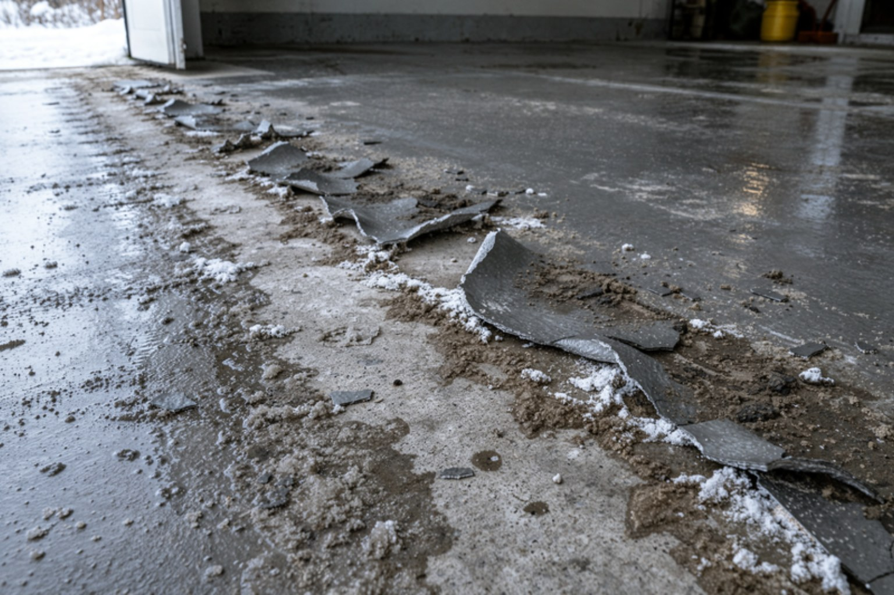
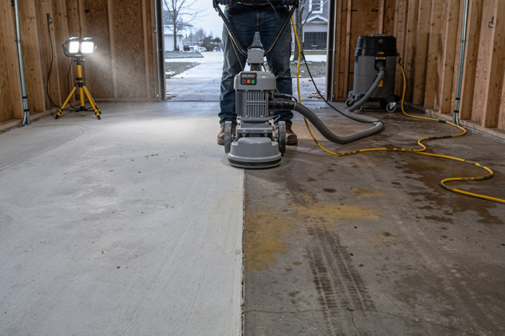
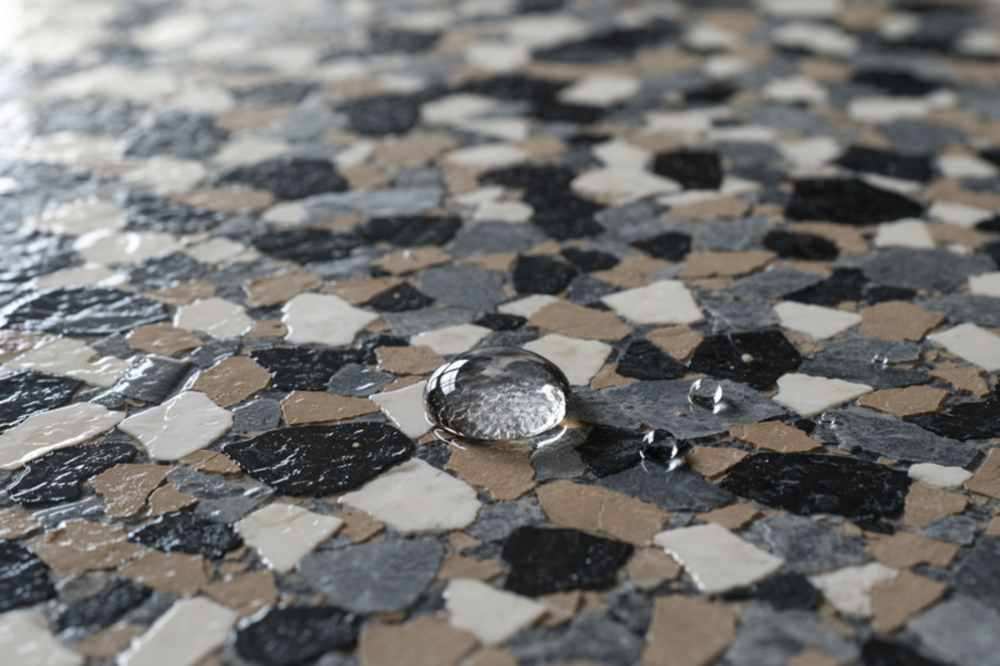

Garage floors are where we see the most coating failures in the GTA, and it is not close. Peeling grey paint under the tire tracks. Yellowed epoxy by the door. White salt bloom pushing up through a finish that is two winters old. The homeowner usually did nothing wrong. They bought a product, or hired someone who used a product, that cannot survive what a Toronto garage does to it.
The fix is not a better brand of the same thing. It is understanding what each coating actually is, matching it to the slab you have, and putting most of the budget into preparation rather than the shiny top layer. The rest of this article is the detail you need to make that call and spot a quote that is going to fail.
Why Garage Floors Fail in Toronto
Southern Ontario is close to a worst case for a coated floor. Four things do the damage, and a coating has to handle all of them.
- Road salt and brine. Every winter a car brings in kilograms of de-icing salt in the slush that pools under it. On bare or thinly coated concrete it works into the pores, crystallizes as the floor dries and pushes the surface apart. That is the pitting you see in older garages across Scarborough, North York and Mississauga.
- Freeze-thaw at the door. The first metre inside an unheated garage freezes and thaws dozens of times a winter. Water trapped under a poorly bonded coating freezes, expands and lifts it off in sheets.
- Hot-tire pickup. A tire that comes off a July highway can be above 60°C. Parked on a cheap epoxy, it softens the film, bonds to it and peels it up when the car backs out. This is the single most common reason a “garage floor paint” fails in its first summer.
- Moisture from below. Many GTA garage slabs were poured directly on soil with no vapour barrier. Water vapour drives up through the concrete and gets trapped under a non-breathable coating, which blisters and lets go. No topcoat fixes this; only testing and the right primer do.
Epoxy vs Polyaspartic Garage Floor Coating: The Honest Comparison
Epoxy
Epoxy is a two-part resin that cures into a hard, thick, chemically resistant film. A professional 100% solids epoxy goes on at 10 to 20 mils in one coat, bonds hard to properly ground concrete and is economical per square foot. Its weaknesses: it yellows in UV light, it is rigid and can crack when the slab moves, it softens under hot tires, and it needs the slab at roughly 10°C or warmer for several days to cure. The water-based “epoxy paint” kits sold at hardware stores are a different product altogether: two to four mils thick and the source of most of the peeling we are called to fix.
Polyaspartic
Polyaspartic is a type of aliphatic polyurea. It is UV stable, so it will not yellow by the garage door. It stays slightly flexible in the cold, shrugs off salt and brine, resists hot-tire pickup, and cures fast at low temperatures, which is why a full system can be ground, coated, flaked and topcoated in one day and driven on in 24 to 48 hours. It costs more, it is harder to work because of that fast cure, and it goes on thinner than a 100% solids epoxy, so a rough slab needs a good base or a grind-and-fill first.
The combination that actually works
Most garage floors we would put our name on are a hybrid: a thick epoxy or polyaspartic base coat for build and bond, a full broadcast of vinyl colour flake for texture, and a clear polyaspartic topcoat for salt, UV and tire resistance. Epoxy where it is strong, polyaspartic on the surface you actually touch.
The product on top gets all the attention. The grind underneath it decides whether you are looking at that floor in ten years or scraping it up in two.

Garage Floor Coating Cost in Toronto (2026)
Garage floor coating in the GTA is priced per square foot. A single-car garage is roughly 250 to 300 square feet; a two-car garage 400 to 500. The ranges below are what properly prepared, professionally installed systems cost across Toronto in 2026. Floors that need a failed coating removed, moisture mitigation or real repair land at the top of the range or above it.
| System | Installed Cost (GTA, 2026) | Notes |
|---|---|---|
| Hardware-store epoxy paint kit (DIY) | $150 – $400 / bay | 2–4 mils thick, acid-etch prep; typically peels within 1–3 winters |
| 100% solids epoxy, solid colour | $5 – $7 / sq ft | Diamond grind, crack fill, one thick coat; will yellow at the door |
| Epoxy base + flake + polyaspartic topcoat | $6 – $9 / sq ft | Best value for most GTA garages; 2 days |
| Full polyaspartic flake system | $7 – $12 / sq ft | One-day install, drive on in 24–48 hrs, winter-friendly |
| Single-car garage, 250–300 sq ft | $1,800 – $3,200 | Any professional system above |
| Two-car garage, 400–500 sq ft | $2,500 – $5,500 | Matches our main cost guide |
| Remove a failed old coating | + $1.50 – $3 / sq ft | Grinding or shot blasting, disposal |
| Moisture-mitigation primer | + $1.50 – $3 / sq ft | Only when the slab tests high; not optional when it does |
| Level a pitted, spalled slab (cementitious overlay) | + $4 – $7 / sq ft | Turns a floor too rough to coat into one that can be |
For context, the same garage floor torn out and re-poured runs $12 to $20 per square foot before you put any finish on it, so a coating or a repair-and-coat approach is still 40 to 60% below replacement for a slab that is structurally sound. Our full resurfacing cost guide has the numbers for porches, steps and driveways alongside this one.
If a quote for a two-car garage comes in under about $2,000 for a “professional epoxy,” ask two questions: how is the floor being prepared, and how thick is the finished system? If the answers are “acid etch” and a number you cannot get, you are being sold the hardware-store kit with a van parked outside. Grinding costs money because it is the part that makes the coating stay.
The Prep Is the Product: Grinding, Moisture and Repairs
A coating is a bond, and the bond is only as good as the surface under it. This is what a floor should get before a drop of resin is opened.
- Diamond grinding, not acid etching. The slab is ground under dust extraction to open the pores and remove laitance, sealers, oil and old paint. Acid etching leaves the cream layer in place and does nothing to a floor that has ever been sealed; it is the shortcut behind most peeling floors.
- A moisture test. A calcium chloride or in-slab relative humidity test tells us whether vapour is coming up through the concrete. Many older GTA garages read high. The answer is a moisture-tolerant epoxy primer, not hope.
- Cracks and spalls repaired properly. Joints and hairline cracks are chased and filled with a flexible polyurea; pitted areas along the door and under the tires are ground back to sound concrete and patched with polymer-modified mortar. A badly salt-eaten floor may need a thin cementitious overlay first so the coating has something flat to bond to.
- Salt completely removed. Residual chloride in the pores will blister a coating from underneath. The floor is scrubbed, rinsed and dried before grinding; if it still dusts white, it gets washed again.
- Edges and the door threshold detailed. The first metre inside the door takes the worst of the slush, so the system is built up there and terminated cleanly at the threshold.

Can You Coat a Garage Floor in Winter in the GTA?
This is the question we are getting most this month, and the answer is better than most homeowners expect. Standard epoxy cannot be installed in a cold garage: the slab needs to be roughly 10°C or warmer for days while it cures, which rules out most unheated garages in Toronto, Vaughan or Brampton from late November through March. Polyaspartic changes that. It cures at temperatures epoxy will not touch, so an attached garage that can be held above freezing, ideally around 5°C, with the door closed for 24 hours is a workable winter job, and you are parking inside two days later.
There are real conditions. The slab has to be dry, so after a wash it gets a full day with a heater and air movement before grinding. Salt residue has to be gone, which takes more effort in January than in June. Frost or condensation on the slab will ruin the bond. And a detached, unheated garage that cannot be tempered is a spring job no matter what the label says. When the conditions are met, winter is a quiet time to get it done, and spring dates in the GTA fill fast.

A new coating is cured in days but hardens fully over a couple of weeks. For the first two weeks, lay down a mat or cardboard where the tires sit, and rinse brine off the floor with a bucket of water rather than letting it dry into a crust. After that, a hose or a mop twice a winter is all a polyaspartic floor needs.
When We Say No to a Coating
Not every garage floor should be coated, and a contractor who never says so is selling, not assessing. We redirect a coating when:
- The slab is moving. A crack with one side higher than the other, or a floor sinking toward the door, is a base problem, and a coating will crack along the same line within a season. That slab is a repair or a re-pour, and we do both.
- Moisture is extreme. A slab that stays visibly damp or reads off the chart needs drainage and vapour work before anything goes on top. A mitigation primer handles moderate readings, not a wet floor.
- The surface is too far gone to grind flat. Decades of salt can eat a centimetre off a slab. The honest route is a cementitious overlay to rebuild and level it, then a coating on top, or a sealed, broom-textured overlay on its own.
- You just want it protected, not pretty. A ground floor with a quality penetrating sealer costs a fraction of a flake system and stops salt from pitting it. Our guide to concrete sealing in Toronto covers that option.
Where We Work
Artisan Coat prepares, repairs and coats garage floors across Toronto, Mississauga, Brampton, Vaughan, Oakville, Etobicoke, North York, Scarborough, Richmond Hill, Markham, Burlington, Milton, Caledon, Hamilton and the wider GTA. Grinding, moisture testing, repair, overlay, coating and sealer are handled by one crew with 20+ years on GTA concrete and a written warranty. See our full list of services, or our Mississauga page if you are west of the city.
The Short Version
A Toronto garage floor faces salt, freeze-thaw, hot tires and moisture from below, and thin epoxy paint survives none of them. Epoxy is a strong, economical base coat; polyaspartic is the UV-stable, salt-proof, cold-curing top layer. Most GTA garages should get epoxy or polyaspartic underneath, colour flake in the middle and clear polyaspartic on top, over a diamond-ground, moisture-tested, repaired slab. In 2026 that is $5 to $12 per square foot installed: $1,800 to $3,200 for a single-car garage, $2,500 to $5,500 for a two-car, plus removal, moisture primer or levelling where the slab needs it.
And yes, an attached garage can be coated this winter. Polyaspartic cures where epoxy will not, as long as the slab is clean, dry and held above freezing. If yours is detached and unheated, rinse the brine off, book a spring date, and stop buying kits.